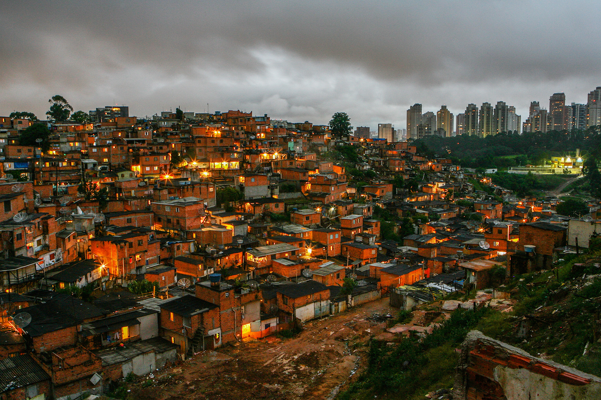
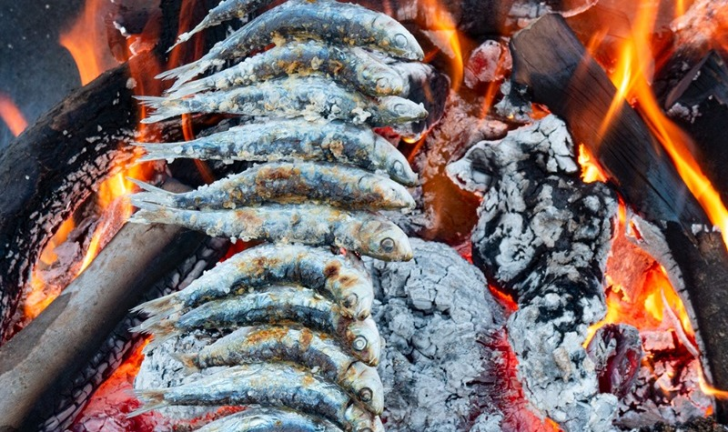

Alma Brasileira

Ofrecemos hospedajes únicos en campings ubicados en las favelas de Brasil, combinando comodidad y autenticidad. Conéctate con la cultura local, disfruta de experiencias enriquecedoras y contribuye al desarrollo sostenible de estas comunidades.
Espeto Brasil

En Espeto Brasil, nos dedicamos a crear espetos deliciosos, especialmente de pescados frescos, capturados en las costas brasileñas. Con técnicas tradicionales y un toque de innovación, ofrecemos sabores únicos que celebran la riqueza culinaria de Brasil.